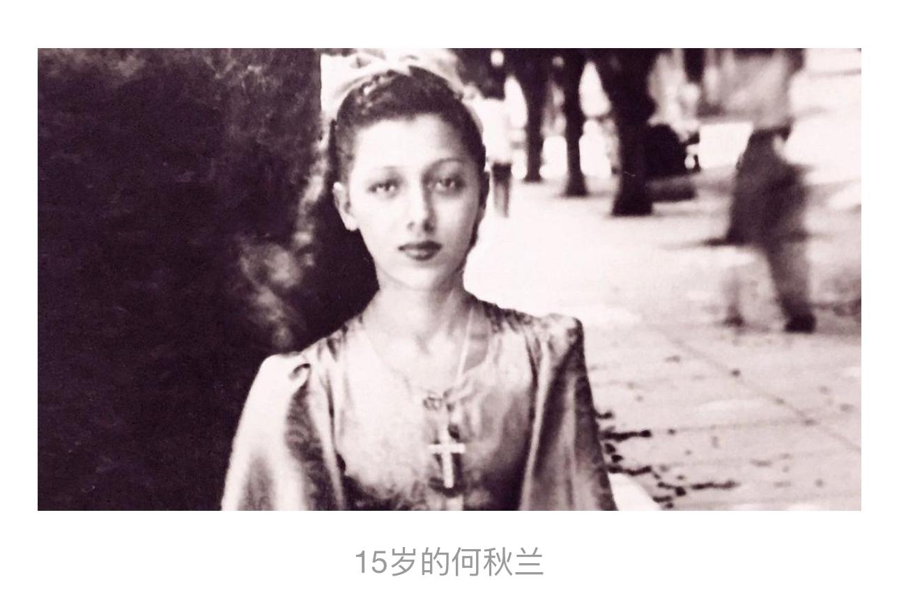

我叫何秋兰
一个生在古巴却长着中国心的老太太。
1930年代，我出生在哈瓦那。生父早逝后，我和母亲流落街头，直到遇见改变我一生的恩人——来自广东开平的方标。
这位痴迷粤剧的富家少爷，为追寻梦想远渡重洋，最终在古巴当起了洗衣工。他不仅收留了我们母女，更待我如亲生女儿，一字一句教我台山话，一笔一划教我写汉字，一招一式传授粤剧精髓。
虽然我的皮肤是白色的，但我的灵魂早已被染上了中国文化的色彩。
养父常说，戏曲不分国界，只要用心，就能唱出最动人的旋律。他用毕生心血，在我这个古巴女孩身上，种下了一颗永不凋零的中国心。
